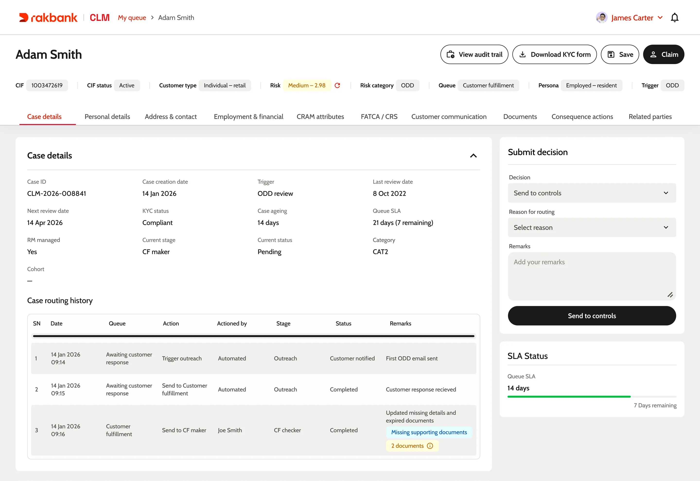
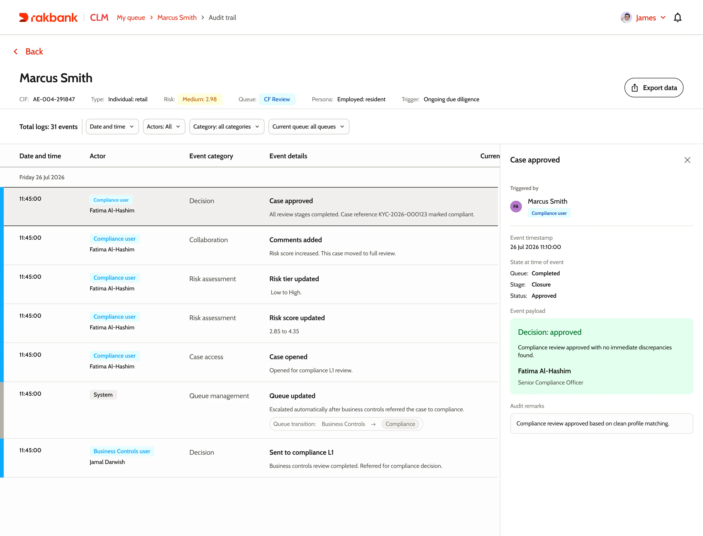
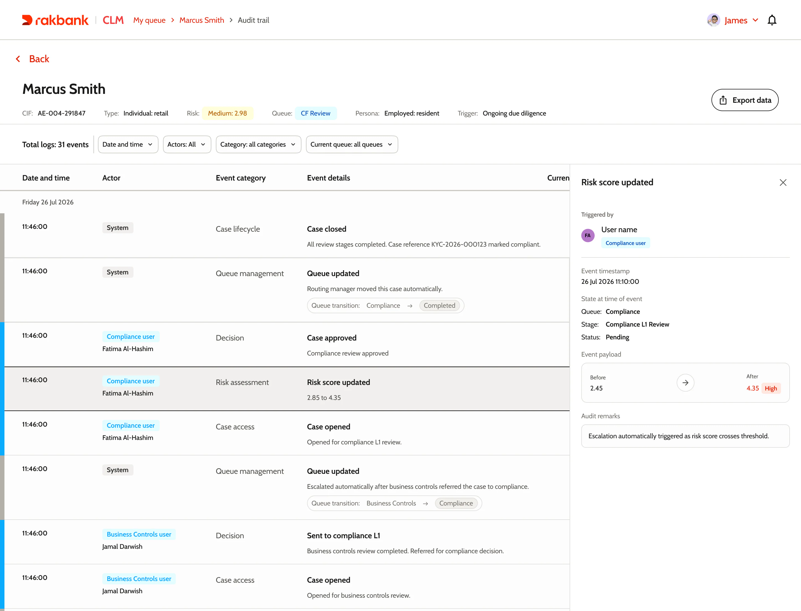
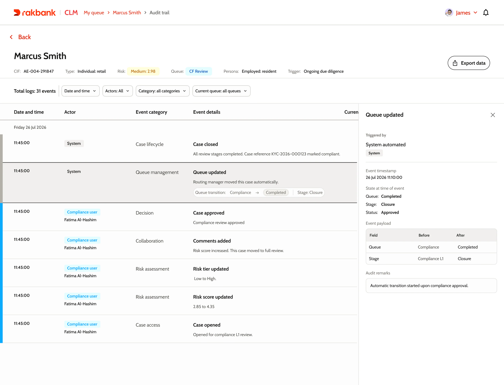
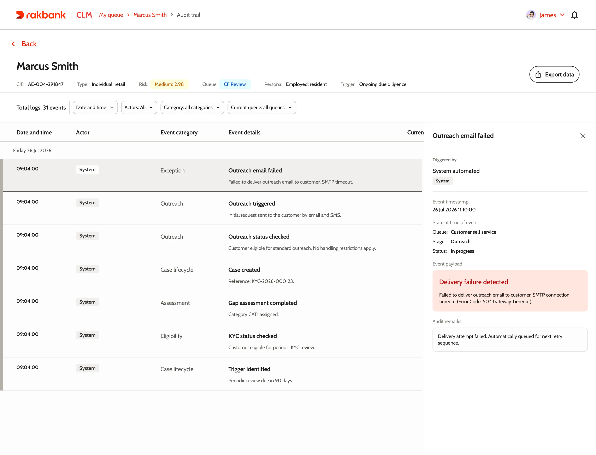
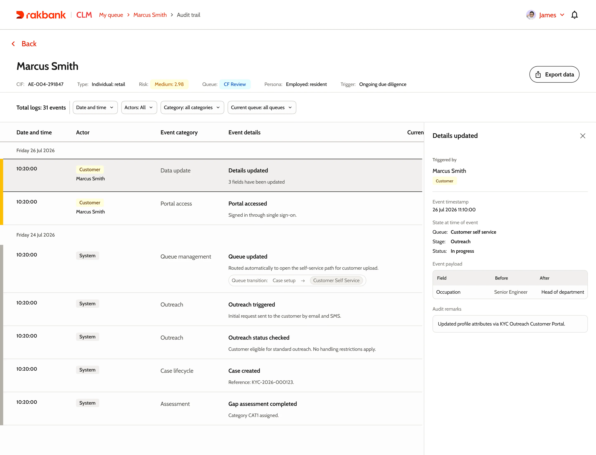

تصميم يمنح اليقين
نظرة مفصلة على سجل التدقيق الذي صممته لمنصة الامتثال في Rakbank.

السبب
أصعب ما في التدقيق كان التذكر
منصة إدارة دورة حياة العميل (CLM) هي المكان الذي تجري فيه مراجعات الامتثال في Rakbank. قبلها كان العمل موزعاً على 4 أماكن: النظام المصرفي الأساسي، ومحرك الإجراءات، والبريد الإلكتروني، وجداول البيانات. كانت المراجعات تكتمل. لكن عندما يسأل المدققون عن سبب قرار ما، كان على أحدهم أن يجمع الإجابة يدوياً. وقد يستغرق ذلك أياماً.
عندما جلست مع المراجعين، توقعت أن يطلبوا السرعة. لم يفعلوا. كل حديث كان يعود إلى الخوف نفسه: الموافقة على شيء ما كان يجب أن يوافقوا عليه.
الميزة
سجل يكتب نفسه أثناء عملك
سجل التدقيق هو الرد على هذا الخوف. يحفظ سبب القرار لحظة اتخاذه، لا بعد أسابيع عندما يسأل أحدهم.
الحل الواضح كان تسجيل كل شيء بصمت. لكن السجل يخبرك بما حدث، لا بسببه. والحل المعاكس، أي مطالبة الموظف بتبرير كل نقرة، يملأ السجل بتفاصيل غير مهمة. لذلك وضعت الأسئلة عند القرارات فقط: عندما يحول أحدهم حالة، أو يغير درجة المخاطر، أو يبدأ إجراءً له تبعات، تطلب اللوحة سبباً قصيراً قبل المتابعة. وكل ما عدا ذلك يتسجل بهدوء في الخلفية.

الميزة
3 أيام، 31 حدثاً، قصة واحدة
هذه حالة حقيقية نعيد عرضها. تبدأ مراجعة دورية، فيرسل النظام بريداً إلكترونياً إلى العميل، ثم يسجل العميل الدخول ويصحح بياناته ويرفع مستنداته. يستلم مراجع الحالة ويحولها إلى فريق ضوابط الأعمال، ثم يرفع فريق الامتثال درجة المخاطر، ويعتمدها مسؤول أول. كل ذلك يظهر على خط زمني واحد.
لون الحافة يخبرك بمن قام بالإجراء قبل أن تقرأ كلمة واحدة: الرمادي للنظام، والأزرق للبنك، والأصفر للعميل. تريد رؤية ما فعله العميل فقط؟ يكفي فلتر واحد.

افتح أي حدث وستجد 4 إجابات ثابتة: من قام به، وكيف كانت الحالة في تلك اللحظة، وما الذي تغير، والسبب المذكور. هذه اللقطة هي أهم ما يبحث عنه المدققون: ليس شكل الحالة الآن، بل ما كان يراه المراجع عندما اتخذ قراره.

كلما كان القرار أهم، كان السجل أغنى. هنا يرفع المسؤول درجة المخاطر من 2.85 إلى 4.35. ويحفظ الحدث الدرجة القديمة والجديدة، والانتقال من فئة منخفضة إلى مرتفعة، وسبب ذلك.

الميزة
كل شيء يترك أثراً، حتى الأخطاء
المراجعون ليسوا وحدهم من يؤثر في الحالة. النظام ينقلها بين قوائم الانتظار. ورسائل البريد إلى العميل قد تفشل ثم يعيد النظام إرسالها. والعميل يعدل ملفه بنفسه عبر البوابة. يحفظ السجل كل ذلك بالطريقة نفسها، لأن الرسالة الفاشلة تهم المدقق بقدر ما تهمه الموافقة.


عندما يحدث العميل بياناته، يعرض السجل كل حقل قبل التعديل وبعده، مع تمييز الحقول المؤثرة في المخاطر.

ما الذي تغير
لم يعد التدقيق تنقيباً في الماضي
التحضير للتدقيق كان يحتاج أياماً من البحث، والآن يكفي فتح لوحة واحدة. ولأن السجل يتكون أثناء العمل، لا بعد انتهائه، صار الرواية الوحيدة التي يثق بها الجميع: المراجعون، وقادة الفرق، والمدققون.
أهمية CLM للبنك
العرض الاستراتيجي الذي قدمته لقيادة البحث والتطوير عن موقع CLM في البنك ووجهته القادمة. الشرائح باللغة الإنجليزية.
شاهد الشرائح